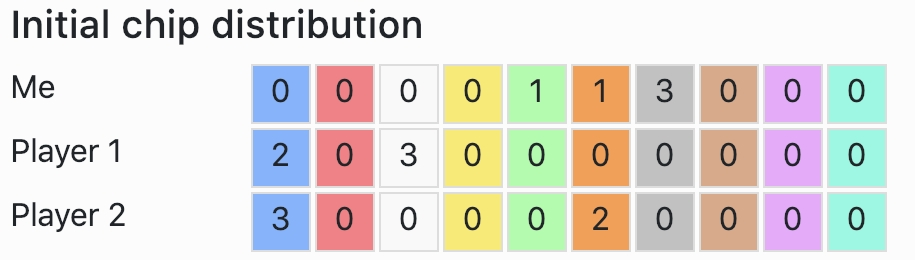
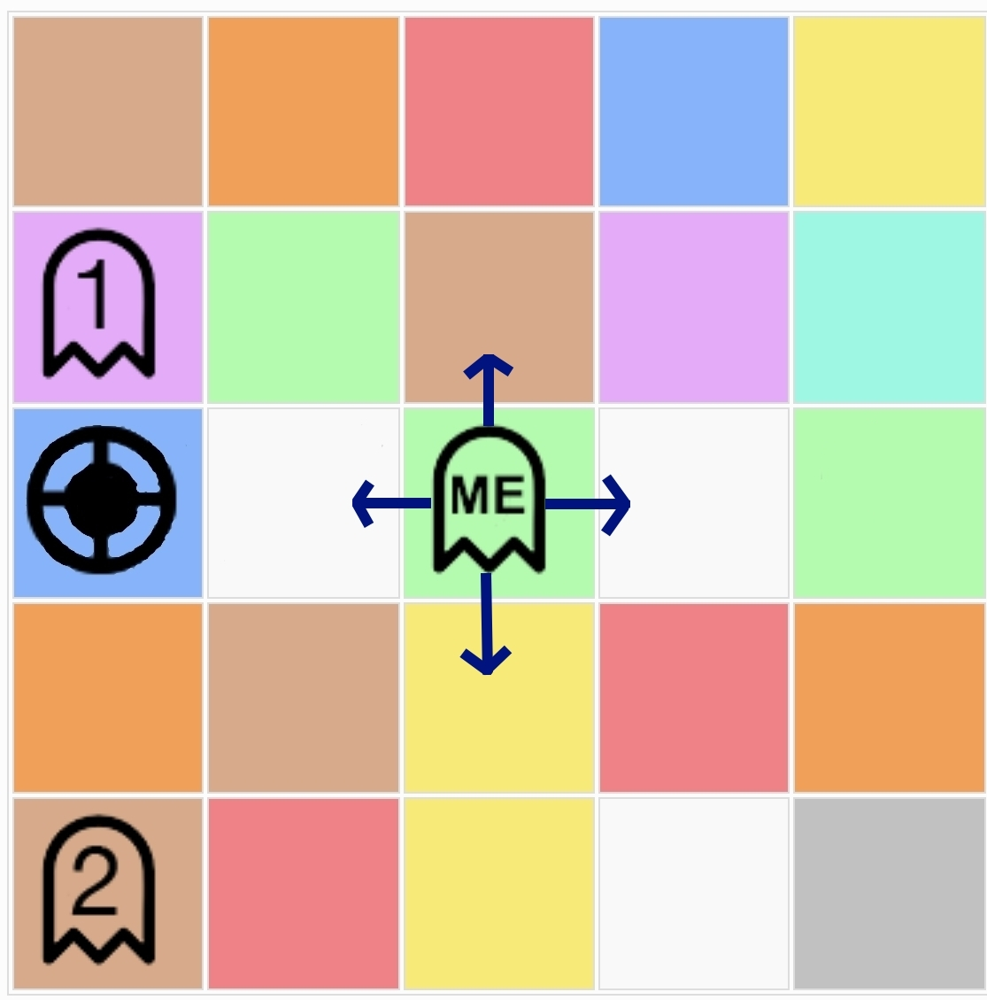
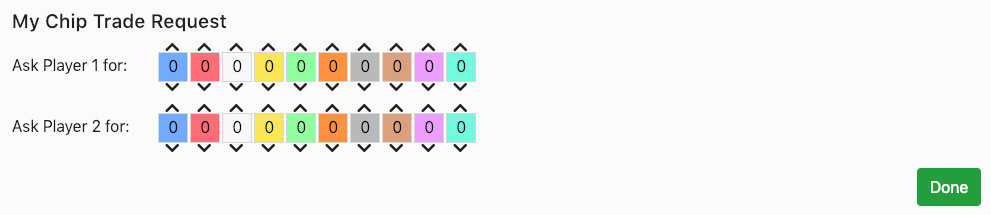

Please read the following game instructions. At the end of the instructions you will be asked 10 questions.
You must answer all of the following ten questions correctly in order to proceed. You will only have three attempts after which you will not be reimbursed further.
You will be requested to play the Coloured Trails game. The objective of the game is to gain the highest score possible.
Points may be gained by moving to a target location on the board and rewarded for the amount of coloured chips the player has in
his/her possesion at the end of the round. Coloured trails is a one-round game played on a
square board by two or more players. The board consists of a square grid of tiles. Each
tile is assigned a solid color from a given palette of colors (e.g., red, blue, green). Two different types of
objects may also be placed on top of tiles—these are players and the goal. Tiles may contain multiple
players and the goal.
Each player begins with a number of allocated chips of different colours. Chips are designated colors from the same palette as the board. Players can use chips to build a path towards the target tile.
Chips may only be used to move to a tile of the same color as the chip (e.g., a player uses one green chip to move to a green tile adjacent to the player’s current position). Players can only move up, down, left or right and not diagonally. Chips may only be used once.
The objective of each player is to gain the highest score possible over a set of 10 games (the score from each game will be added together for the final score). During each game you will have one chance to determine the best course of action which will award you with the highest possible amount of points. Often this is achieved by reaching the target tile, however sometimes it is better to do nothing. During the game you may request chips from other players if you need them to reach the target tile. A player must relinquish a chip that has been requested from it, if they are not already using that chip to reach a goal. If both you and another player have requested the same chip, you have precedance and will get the chip. If you ask another Player for a chip they need in order to reach the target tile, they will not relinquish the chip but you will still be deducted points for the request. During the game you can assume that the other players are necessarily following the best path in terms of maximizing their score.
During each game you can ask all players for as many chips as you want. An interaction with a specific player is considered a single "chip request" regardless of how many chips were requested. The game is constructed as a one-round game. You have 3 minutes per each game to decide if you want to request a chip from other players or not. Once you have decided click "Done" and the next game will begin. If you have not made a decision in 3 minutes, the game will time out and you will not receive any points for that game.
The scores may range from -500 to +500. The following factors effect the score :
Consider the game described above. Following the path emphasized by X’s would mean asking Player 1 for 3 white chips and Player 2 for 1 blue chip, reaching the goal and having 5 chips remaining. Your final score would be:
A better course of action under these circumstances would be to do nothing, and not reach the goal at all. Your final score would be:
You must answer all of the following ten questions correctly in order to proceed. You will only have three attempts after which you will not be reimbursed further.
1. At the end of the game I get extra points for each chip that I didn't use.
a. True
b. False
2. Requesting two chips from two different players would cost :
a. 70 + 6 + 6 = 82 points
b. 6 + 6 = 12 points
c. 70 + 6 + 70 + 6 = 152 points
3. It is always better to reach the target tile, than to do nothing, even if it leads to a lower score.
a. True
b. False
4. Which of the following influence the final score ?
a. You are awarded an additional 5 points for each chip remaining at the end of the game.
b. Reaching the goal is worth 150 points.
c. A chip request from a single player costs 70 points, with each chip requested costing an additional 6 points.
d. The final score is calculated by summing all of the above.
5. It is better to ask two chips from two different players than to ask one player for two chips.
a. True
b. False
6. If I have reached the goal by asking two different players for 2 chips each, and I have 3 chips left over, my final score would be :
a. 150 points for reaching the goal + 3 * 5 points for every chip remaining = 165 points
b. 150 points for reaching the goal + 3 * 5 points for every chip remaining - 70 points for the chip requests = 95
c. 150 points for reaching the goal + 3 * 5 points for every chip remaining - 70 points for request one - 70 points for request two = 25
d. 150 points for reaching the goal + 3 * 5 points for every chip remaining - 70 points for request one - 70 points for request two - 6 * 4 points for each of the chips requested = 1 point
7. Assuming I had 10 chips to begin with. What would be my score if I did nothing ?
a. 10 * 5 = 50
b. 10 * 6 = 60
c. 150 + 10 * 5 = 200
8. Player 1 has 4 red chips and 3 blue chips. They are using all of the blue chips to reach the target tile. What will happen if I request a blue chip ?
a. Player 1 will give me the blue chip.
b. Player 1 will not give me the blue chip and I will not be deducted points for the request.
c. Player 1 will not give me the blue chip but I will still be deducted points for the request.
9. Under what conditions can I move to another tile ?
a. If the tile is below, above, to the left or to the right of the tile I am currently on.
b. If I have a chip of the same colour as the tile I want to move to.
c. Either A or B.
d. Both A and B.
10. Assuming I had 10 chips to begin with. I can either reach the goal by requesting a blue chip from Player 1 and a red chip from Player 2 and having 5 chips left over. Or I can reach the goal by making no requests but using all of my chips. I should :
a. Reach the goal without requesting any chips.
b. Do nothing.
c. Reach the goal by making the chip requests.